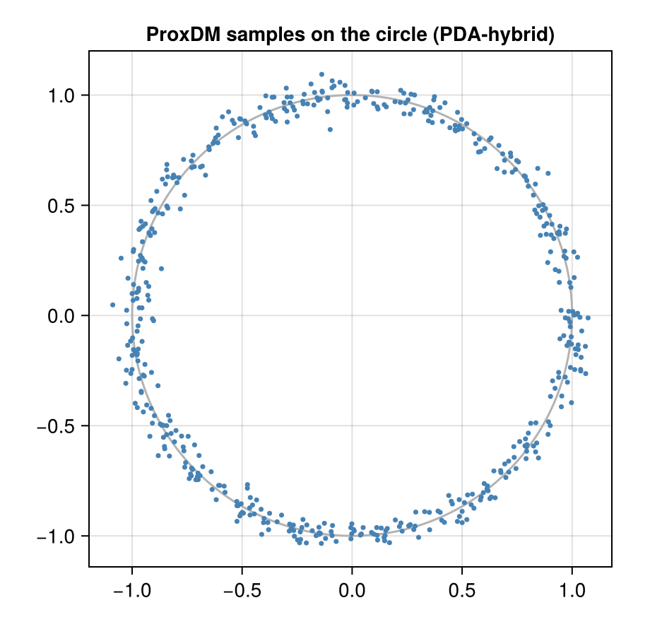

Proximal diffusion models
Download as a Jupyter notebook
A score-based diffusion model is queried through its score, $\nabla\log p_t$. ProxDM (Fang, Díaz, Buchanan & Sulam, 2025) queries it through its proximal operator instead:
\[\operatorname{prox}_{-\lambda\log p_t}(v) \;=\; \arg\min_u\ \tfrac12\lVert u - v\rVert^2 - \lambda\log p_t(u).\]
The optimality condition, $u - v = \lambda\nabla\log p_t(u)$, is a gradient step evaluated at the new point: a backward Euler step. This tutorial uses the exact proximal operator of a Gaussian mixture, so every result can be compared with the truth.
using VariationalDiffusion, LuxCore, Random, LinearAlgebra, Statistics
using CairoMakie
sched = VPSDE()A proximal step is a MAP denoiser
For one Gaussian with mean $m$ and standard deviation $s$, the prox has a closed form, a weighted average of $v$ and the (scaled) mean. MixtureProx solves the minimisation numerically for any mixture; here it agrees with the formula:
m, s = [0.5, -1.0], 0.3
P = MixtureProx(GaussianMixtureEps(sched, reshape(m, 2, 1); s))
ps1 = (μ = reshape(m, 2, 1),)
v, t, λ = [1.0, 2.0], 0.3, 0.5
a, vt = alpha(sched, t), alpha(sched, t)^2 * s^2 + sigma(sched, t)^2
(numerical = first(proximal(P, v, t, λ, ps1, NamedTuple())), closed_form = (vt .* v .+ λ * a .* m) ./ (vt + λ))(numerical = [0.6992877748489486, 0.8460172469754468], closed_form = [0.6992877748489486, 0.8460172469754467])Sampling with proximal steps
ProxDM's sampler runs the reverse diffusion with proximal steps instead of score steps. Its step-size condition is mild (PDA needs $\gamma_k < 2$; the hybrid variant has none). For the Gaussian above, the samples should have mean $m$ and standard deviation $0.3$:
function draw(n; steps, hybrid = false)
rng = Xoshiro(1)
reduce(hcat, [first(proxdm_sample(P, sched, randn(rng, 2), ps1, NamedTuple(); steps, hybrid, rng)) for _ in 1:n])
end
X = draw(1000; steps = 100)
(mean = vec(mean(X; dims = 2)), std = vec(std(X; dims = 2)))(mean = [0.5194111351827606, -0.9916186354523455], std = [0.2887358349821073, 0.29439650766768827])The mean is right; the spread is slightly too small, a discretisation error that shrinks with the step count at first order, as expected of a backward Euler scheme:
for steps in (20, 40, 100, 400)
println(rpad(steps, 4), " steps: std = ", round.(vec(std(draw(600; steps); dims = 2)); digits = 3))
end20 steps: std = [0.252, 0.253]
40 steps: std = [0.275, 0.273]
100 steps: std = [0.281, 0.302]
400 steps: std = [0.296, 0.282]
A multimodal example: the circle
On the circle mixture of the first tutorial, the sampler should put its samples on the ring.
θ = range(0, 2π; length = 49)[1:48]
ring = vcat(cos.(θ)', sin.(θ)')
Pc = MixtureProx(GaussianMixtureEps(sched, ring; s = 0.05))
psc = (μ = ring,)
rng = Xoshiro(3)
S = reduce(hcat, [first(proxdm_sample(Pc, sched, randn(rng, 2), psc, NamedTuple(); steps = 100, hybrid = true, rng)) for _ in 1:500])
r = vec(sqrt.(sum(abs2, S; dims = 1)))
(radius_mean = mean(r), radius_std = std(r))
fig = Figure(size = (460, 440))
ax = Axis(fig[1, 1]; aspect = DataAspect(), title = "ProxDM samples on the circle (PDA-hybrid)")
lines!(ax, cos.(range(0, 2π; length = 200)), sin.(range(0, 2π; length = 200)); color = :gray70)
scatter!(ax, S[1, :], S[2, :]; markersize = 5, color = :steelblue)
fig
Proximal inference for a relation
The prox also gives a deterministic query method for the implicit learner, prox_infer: alternate the prior's prox with the clamp's prox (half-quadratic splitting). Given $x = 0.6$ on the circle, the two starting points give the two branches:
up, _ = prox_infer(Pc, [0.6, 0.5], [Inf, 0.0], 0.0, psc, NamedTuple(); λ = 0.01)
dn, _ = prox_infer(Pc, [0.6, -0.5], [Inf, 0.0], 0.0, psc, NamedTuple(); λ = 0.01)
(up = up.z, down = dn.z, iterations = (up.iters, dn.iters))(up = [0.6, 0.7934747167195307], down = [0.6, -0.7934747167195307], iterations = (17, 17))The answers are symmetric to the last digit and lie on the circle ($0.6^2 + 0.79^2 \approx 1$); the closed-form score model of the first tutorial, which smooths over noise levels up to $0.05$, put them slightly inside.
A learned ProxNetwork replaces MixtureProx in all of the above; it is trained with proximal_matching_loss. See the implementation note proxdm.md in the theory vault for details and open ends.
This page was generated using Literate.jl.